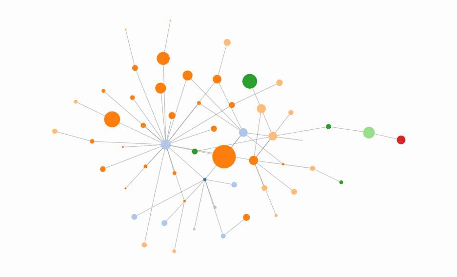
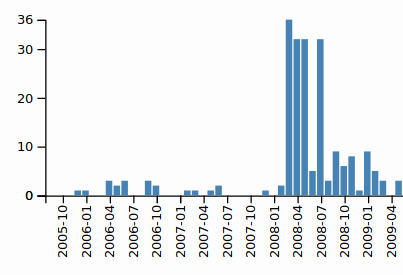

GLAM Visual Tool
Canton of Zürich
Category network

User contribution

Usage
img
Views
img
Canton of Zürich
Category in Commons:
Historical images of buildings in the canton of Zürich
Total media in Commons:
1234